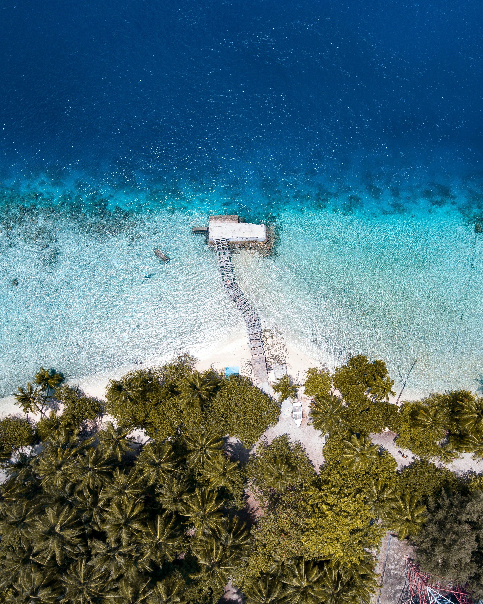
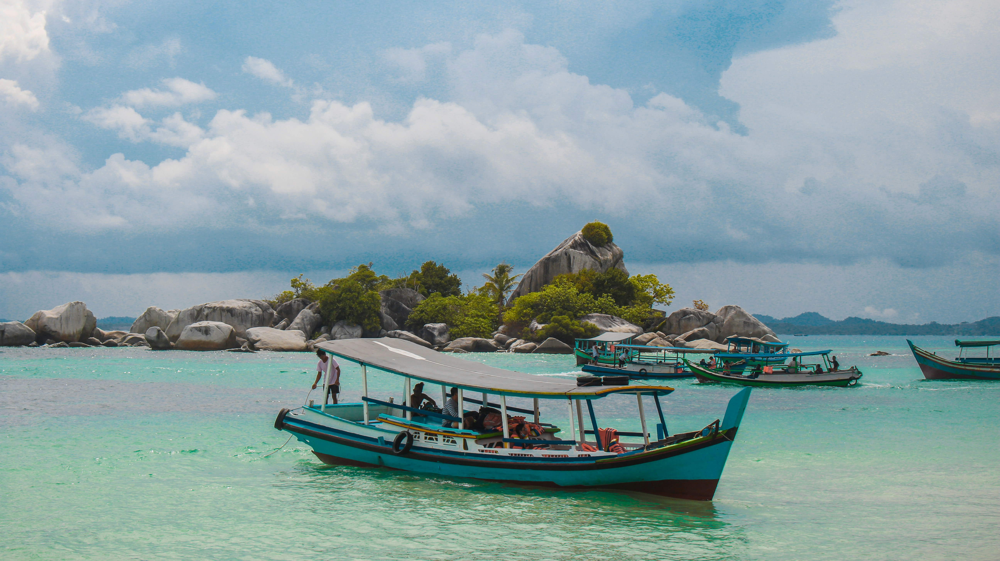
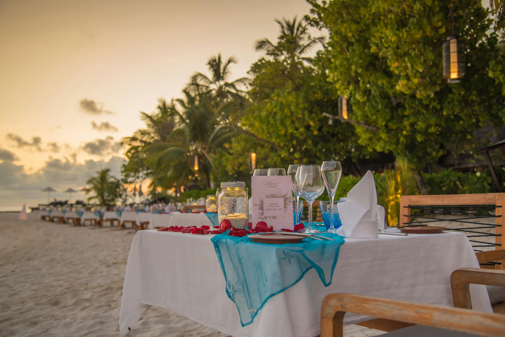

Welcome to
Taniti

A Tiny Island with Big Adventures
Taniti is a small, tropical island in the Pacific. While the island has an area of less than 500 square miles, the terrain is varied and includes both sandy and rocky beaches, a small but safe harbor, lush tropical rainforests, and a mountainous interior that includes a small, active volcano.
Taniti’s Heart & Soul: Its People and Land
Taniti has an indigenous population of about 20,000. Until a recent increase in tourism, most the Tanitian economy was dominated by fishing or agriculture.
Plan Your Trip!

Plan Your Excursions
From Volcano hikes to snorkeling adventures, discover the best activities on the island.
Get more information
Where to Stay
Find the perfect accommodations, from beachfront resorts to cozy island bungalows.
Get more information

Where to Eat
Explore Taniti's top restaurants, featuring fresh seafood, local cuisine, and more.
Get more information